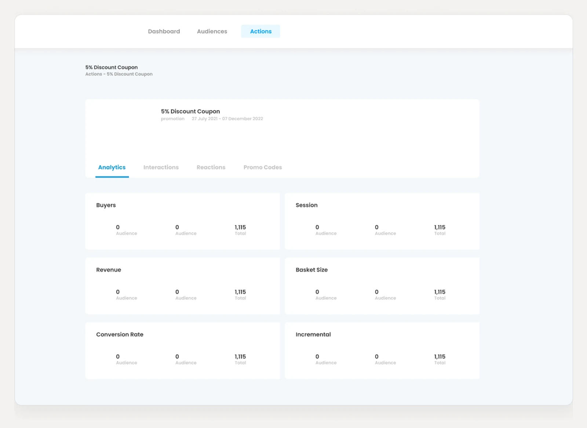
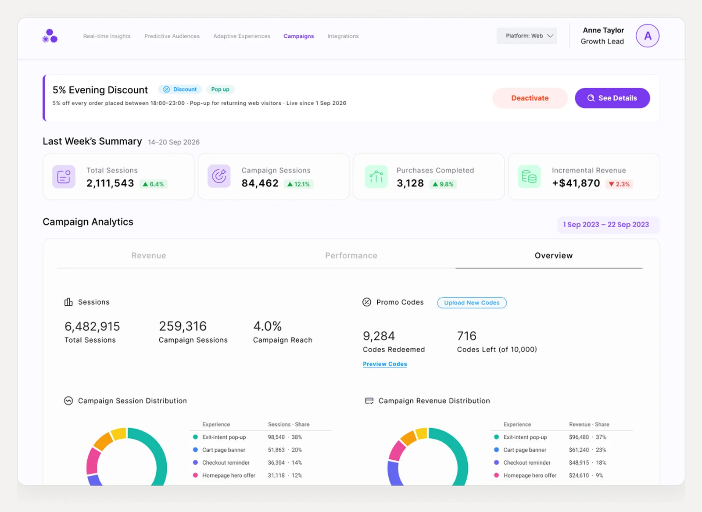
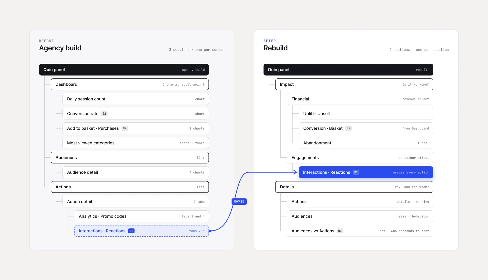
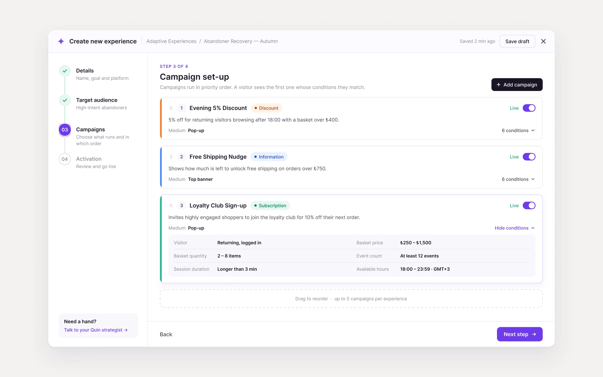
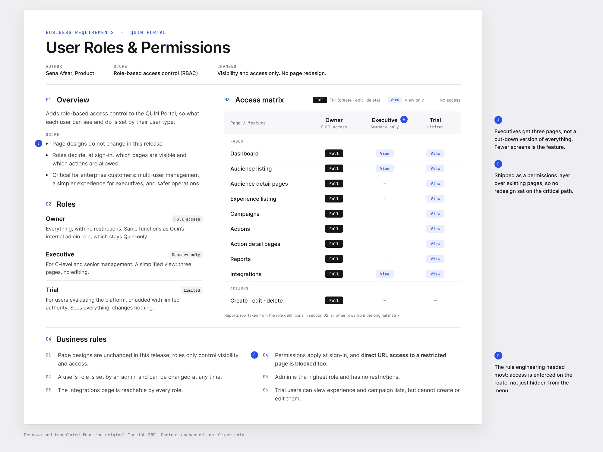

The rescue that became the product.
An outsourced agency delivered a UI that could not be built, on a platform with no users — not customers, and not the company itself. I was brought in to define the product architecture, redesign the dashboard end to end, and get customers running complex AI campaigns without hand-holding.
Role
Lead UX/UI Designer, acting product manager
Timeline
2022 — 2024 · ongoing as Senior Product Designer
The core group
CTO, lead developer, front-end developer, customer success lead — and me leading the process
Focus
Information architecture · Brand identity · Complex prototyping · Design systems
Tools
Figma & FigJam · Webflow · Jira / Confluence · Microsoft Clarity


A platform nobody opened, including the people who built it
The legacy platform functioned strictly as an internal tool, and even internally it had lost. The team configured everything in the admin panel and then went back to Excel to read the results. Zero customers were using the portal. On top of that, the agency concept accounted for neither the technical constraints nor the people who would use it.
The constraint that made it hard: the engine underneath was genuinely sophisticated, and the interface in front of it had been drawn by people who had never watched anyone try to run a campaign. So the first job wasn't design, it was working out what could actually exist. We started as a small group — the CTO, the lead developer, the front-end developer and the customer success lead — to establish what the product really was, and I led that process through user research, competitive analysis and the feature flows that became the baseline everything afterwards was argued against.

Cutting the AI out of the AI product's first release
The fork: ship the full vision — live feed, AI-generated insights, the things the company sold itself on — or ship the part a new customer could actually learn in one sitting.
What I chose: we parked the live feed and the AI-generated insights for V1. Two reasons, and the second one is the honest one: onboarding got dramatically simpler without them, and the workload came down enough that we could actually ship. A rescue that takes another year isn't a rescue.
What it cost: for a while we couldn't market our best AI features where they belonged — on the dashboard itself. The insights kept going out as separate reports, assembled by the data analytics and customer success teams. That is a real cost: the product was quieter about its own intelligence than the company was, and someone had to do by hand what the interface should have been doing.

A builder is an interaction, and an interaction is the one thing a still cannot argue for.
Building the pop-up builder natively instead of integrating one
The fork: bolt on a third-party pop-up tool, or build the builder inside the product.
What I chose: native. A predictive engine that decides who sees something is worth very little if the what lives in another vendor's dashboard. More to the point, every campaign had been a custom build until then — a developer's time, every time.
What it cost: two months of design before anything was built, spent making sure the builder covered the needs people had actually been filing custom requests for, rather than the needs we assumed. Then two months of build and testing, and a week to migrate every existing action into the new format and onboard customers onto it. Four months and a migration is not a small bill for a feature nobody had asked for in those words.
The rules that came out of it are visible in the screen above: campaign state is one word and one switch, because the ops team scans that list all day; priority is the rule, so the order is shown and the number says who wins; conditions read as sentences — “longer than 3 min”, never a raw range; and a finished step keeps its one-line answer, so nobody reopens it just to check what they chose.
What it bought: the sales team could answer design questions in the room, confidently, which changed the shape of their calls. Customer success and the front-end developer could put a requested design live themselves — no developer, no custom build, no queue. The feature that cost the most is the one that took the most work off everyone else.

Writing the documents a startup says it doesn't have time for
The fork: keep working the way a startup works — quick calls, quick actions, a fix raised by customer success and shipped the same afternoon — or put structure in and risk slowing all of that down.
What I chose: both, which was the hard part. Business Requirement Documents and detailed interactive prototypes became the shared reference, but they had to keep pace with a team that fixes things on the day they're reported. The structure only worked because communication with the developers stayed constant — the document and the conversation ran together rather than one replacing the other. I also sat in on QA and testing, so engineering output matched the UX intent and the legal constraints before anything reached a user.
What it cost: the overhead is real, and it falls on the person writing. The test was whether customer success could still get an urgent fix through in a day. They could — but keeping that true took constant work, and it is the reason the system held rather than becoming paperwork nobody read.
Three years of calling it a side feature
I still work on this product today, which means I have had to live with every decision I made in 2022 — including the one I got wrong for three years.
We refused to build the pop-up builder for three years. The argument was always the same, and it sounded sensible every time: it isn't our value proposition, the prediction engine is. That was true and it was beside the point. The pop-up was where the prediction actually met a customer's customer, so it was where the whole product was judged — and every campaign going through a custom build meant friction for sales, for customer success, for engineering, and for anyone trying to move quickly. We were protecting the roadmap from the feature that was shaping the experience.
I would build it in year one. Not because it became important later, but because it already was and we were measuring importance by the wrong thing.
A stagnant internal tool, turned into the product the company works in.
When I joined, nobody used the portal. Everything was configured in the admin panel and read in a spreadsheet. After V1 went live, the whole internal team moved into it, the sales team started giving live demos and putting the product in front of prospects during the sale itself, and half of the existing customers were running the dashboard on their own.
Since then: customers managing complex AI campaigns without hand-holding, a design system that has absorbed two years of new features without a rewrite, and an award shelf that runs from 2023 to 2026.
Bronze & Silver Stevie® 2026 · UK AI Index 2025 · Digital Impact Awards 2025 (with Penti) and 2023 (with Kingfisher Group). Two of those are for work with a named retail client, which matters more than the trophies: it means the thing was used, in production, by someone with something to lose.